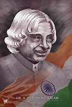

Dr. A.P.J. Abdul Kalam (October 15, 1931 – July 27, 2015) was a remarkable Indian scientist and leader who made a huge impact on the nation’s defence by leading the development of India’s missile and nuclear programs. He became the President of India from 2002 to 2007 and was loved for his simplicity, vision, and dedication to the country. Known as the "Missile Man" for his scientific contributions and the "People’s President" for his connection with the public, his life story continues to inspire millions to dream big and work hard for their goals. Read more into the article to know about Dr. A P J Abdul Kalam's Biography.